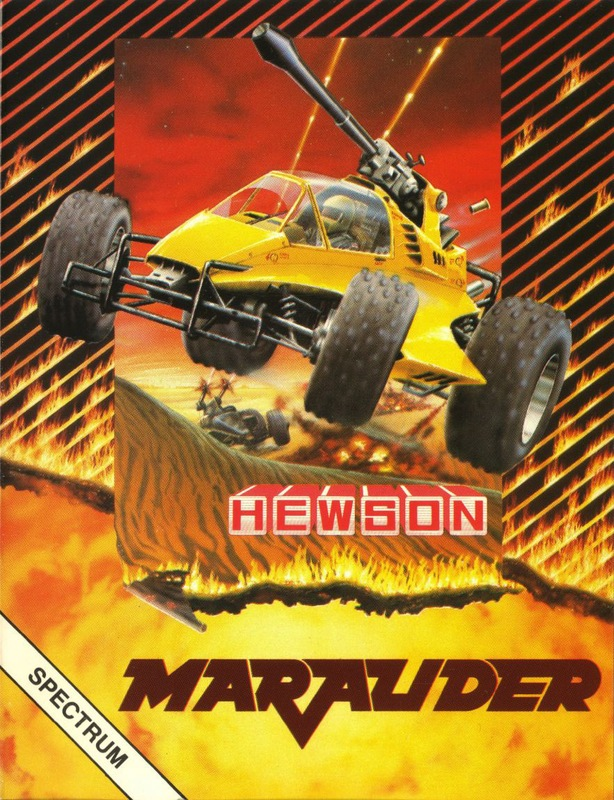
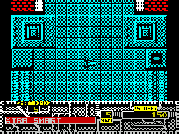
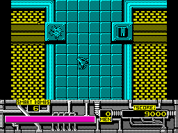
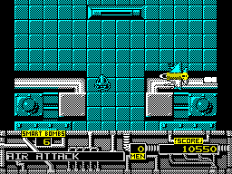

Marauder


{kind=link}

| Publisher: | Hewson |
| Price: | £7.99 cassette, 12.99 disk |
| Year: | 1988 |
| Source: | CRASH, Issue 55 |

Ever been stuck in a traffic jam and wished you could blast everything out of the way? Well, just for your benefit Hewson have released Marauder featuring a Battlecar armed to the teeth.

It travels through a battlefield full of danger on the planet Mergatron, fighting a multitude of enemies which fire missiles, bombs and Molotov cocktails. The only man capable of controlling this massive Battlecar is the brave Captain C T Cobra. His mission; to recover the stolen jewels of Ozymandias which are buried deep beneath the planet’s surface.
The action, viewed from overhead, takes place against a monochromatic, vertically scrolling backdrop. Alien vehicles attack from the ground, ammunition hurtles through the air, missile launchers belch explosive and the occasional aircraft travels across the screen to release a powerful heat seeking missile. In addition to ordinary ammunition, the Battlecar is equipped with a limited number of smart bombs which destroy all enemies on the screen when fired.

To make life in this dangerous environment less hazardous, extra lives and weapons are obtained by shooting beacons which continually change colour. The colour of a particular beacon when shot determines which weapon or ability the Battlecar gains. Certain colours hinder rather than help. They may jam your laser for ten seconds, reverse your controls or deprive you of one of your five lives.
Screen displays show your score as well as the number of lives and smart bombs remaining. Warning of air attacks, and information on extra weapons and lives awarded or lost, is printed out on a status strip when appropriate.
Once the Battlecar has reached the end of a level, he must destroy a plethora of missile-firing aliens to gain access to the next stage. If Captain Cobra manages to get through all the levels, the stolen jewels are safe, and the capable Captain gains an even greater hero’s reputation than he had before.
CRITICISM

Ozymandias
“Another great shoot-’em-up from Hewson hits the streets — and with just as much force as Exolon and Cybernoid. Marauder lives up to the usual Hewson standard of perfection with excellent sound and good quality graphics. The landscapes of the different levels scroll smoothly as you try to blast everything in sight. But there’s much more to Marauder than just shooting: some of the targets fire homing missiles that chase you wherever you go and are very hard to shake off. There are air attacks and if you shoot the wrong beacon, your gun can get jammed or the controls reverse — right in the middle of all the action. To top all that, each level is just as detailed and challenging as the last; they progress in difficulty to the point at which they become almost impossible (like Level 3!). Marauder is yet another excellent game from Hewson.”
NICK ... 90%
“Marauder is a glowing example of the high quality we’ve come to expect from Hewson. The Battlecar itself is quite simply animated and looks more like a spaceship than a car. Though mostly monochromatic, the graphics are well shaded and fairly detailed. There is plenty of sound on the 128K with various tunes on the front end and one during the game which can be swapped for spot effects if it gets irritating. The gameplay is of course very simple; just blast everything in sight! The only exception is the shooting of the coloured beacons where you need to be careful not to lose a life, or inadvertently reverse the car’s controls (almost as bad!). My only gripe is that the shields sometimes fail to work when they are meant to be on. Despite this, however, the game is very playable and keeps you coming back for more. An excellent and entertaining blast-’em-up.”
PHIL ... 87%
“Hot on the trail of the brilliant Cybernoid, comes another great game. The detailed Marauder Battlecar trundles around a carefully shaded and very dangerous background. Mobile meanies whizz around the screen in a very menacing fashion, shooting at anything that moves. (The stationary obstacles aren’t exactly passive either as they lob homing missiles and explosives through the air.) The action is fast and furious: dare to take your trigger finger away from the fire button for a moment, and another life is lost. With such hazardous and compelling action I couldn’t help enjoying Marauder — right from the very start. Well done, Hewson — you’re on to another winner!”
MARK ... 90%
COMMENTS
| Joysticks: | Cursor, Kempston, Sinclair |
| Graphics: | Mostly monochromatic with the odd splash of colour and detailed sprites |
| Sound: | Limited to atmospheric spot effects on the 48K. Dramatic ingame tune by Dave Rodgers on the 128K |
| Options: | Definable keys. Sound effects on/off on the 128K version |
| General rating: | An immensely playable shoot-em-up with plenty of variety. Up to Hewson’s characteristically high standards |
| Presentation: | 89% |
| Graphics: | 83% |
| Playability: | 91% |
| Addictive qualities: | 91% |
| Overall: | 90% |